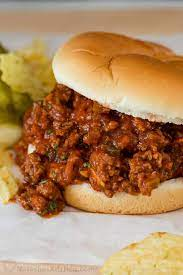

Finest Sloppy Joe Recipe

A sloppy joe is a sandwich consisting of ground beef, onions, tomato sauce or ketchup, Worcestershire sauce, and other seasonings, served on a hamburger bun.
ingredients
1 brown onion, finely chopped
1 green capsicum, seeded, finely chopped
1 tbsp American mustard
1/4 cup (60ml) tomato sauce
2/3 cup (160ml) tomato passata
4 brioche buns
1 tbsp Worcestershire sauce
Method
Heat the oil in a large frying pan over medium-high heat. Cook the onion and capsicum for 5 mins or until onion softens. Add the mince and cook, stirring with a wooden spoon to break up any lumps, for 8 mins or until mince changes colour. Add the mustard, tomato sauce, Worcestershire sauce and passata. Season. Cook, stirring, for 5 mins or until the mince mixture thickens.
Preheat a grill on high. Place the bun bases on a large baking tray. Top with the mince mixture and cheese slices. Place the bun tops, cut-side up, on the tray. Grill for 2 mins or until cheese melts and bun tops are toasted.
Top the cheese with the bun tops. Serve with the shoestring fries and dill pickles.